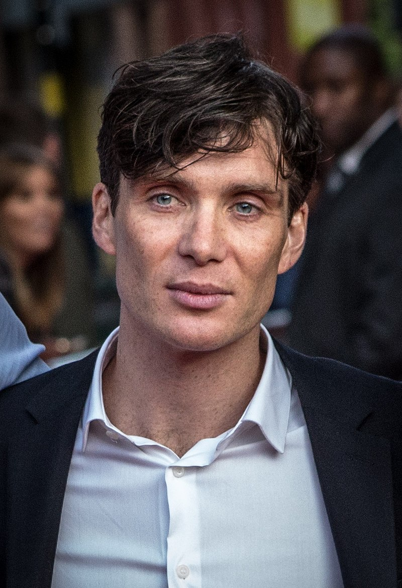

Cillian Murphy

Education
law at University College Cork (UCC) 1996
Career
- 1996–2001: Theatre work and early roles
- 2002–2004: 28 Days Later and breakthrough
- 2005–2006: Villainous roles and critical success
- 2006–2010: Further theatre and film roles
- 2011–present: Peaky Blinders and success
Activism
- participated in the 2007 Rock the Vote Ireland campaign, targeting young voters for the general election
- campaigning for the rights of the homeless with the organisation Focus Ireland
- patron of the UNESCO Child and Family Research Centre at the National University of Ireland Galway
Awards
2002
- won ourense Independent Film Festival Award Best Actor for Disco Pigs
2006
- won GQ UK Award Actor of the Year for The Wind That Shakes the Barley